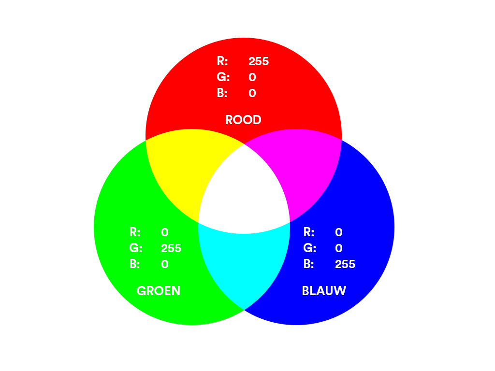

Een kleurmodel is een systeem waarmee je kleuren op een computerscherm kunt beschrijven en maken. Het meest gebruikte model voor schermen is RGB, wat staat voor Red, Green en Blue (rood, groen en blauw). Elke pixel op een scherm bestaat uit drie piepkleine lampjes: één rood, één groen en één blauw lampje. Door de lichtsterkte van elk lampje aan te passen, kun je bijna elke kleur maken die je op een scherm ziet. Elk van de drie kleuren kan een waarde hebben van 0 tot en met 255, dus 256 verschillende niveaus van lichtsterkte. Dat betekent dat je in totaal 256 × 256 × 256 combinaties kunt maken, ofwel meer dan 16 miljoen verschillende kleuren. Staan alle drie de waarden op 0, dan zie je zwart; staan ze alle drie op 255, dan zie je wit. Een kleur als puur rood schrijf je dan als 255, 0, 0 (maximaal rood, geen groen, geen blauw). Naast RGB bestaat er ook het CMYK-model, dat gebruikt wordt bij printen in plaats van op een scherm, met de kleuren cyaan, magenta, geel en zwart.CMYK staat voor Cyan, Magenta, Yellow en Key (zwart) en wordt gebruikt bij printers, in plaats van RGB voor schermen. Het grote verschil: RGB telt licht op (van zwart naar wit), terwijl CMYK inkt aftrekt van wit papier (van wit naar zwart). De "K" (zwart) wordt apart toegevoegd, omdat het mengen van cyaan, magenta en geel nooit een echt diep zwart oplevert.
